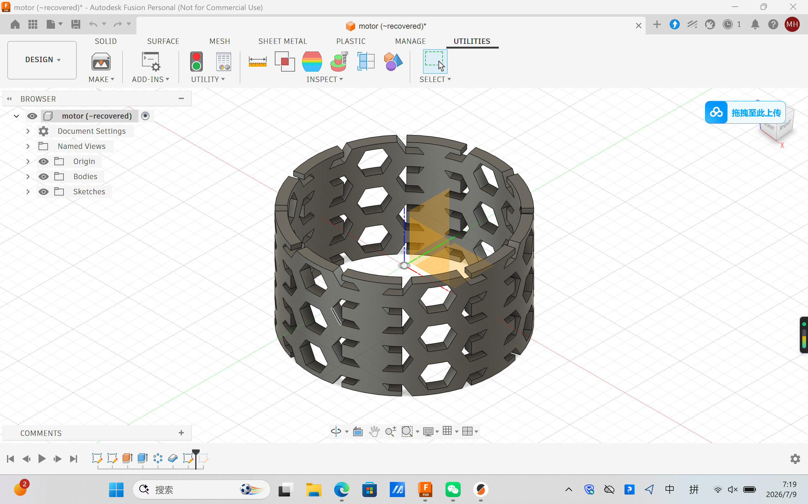
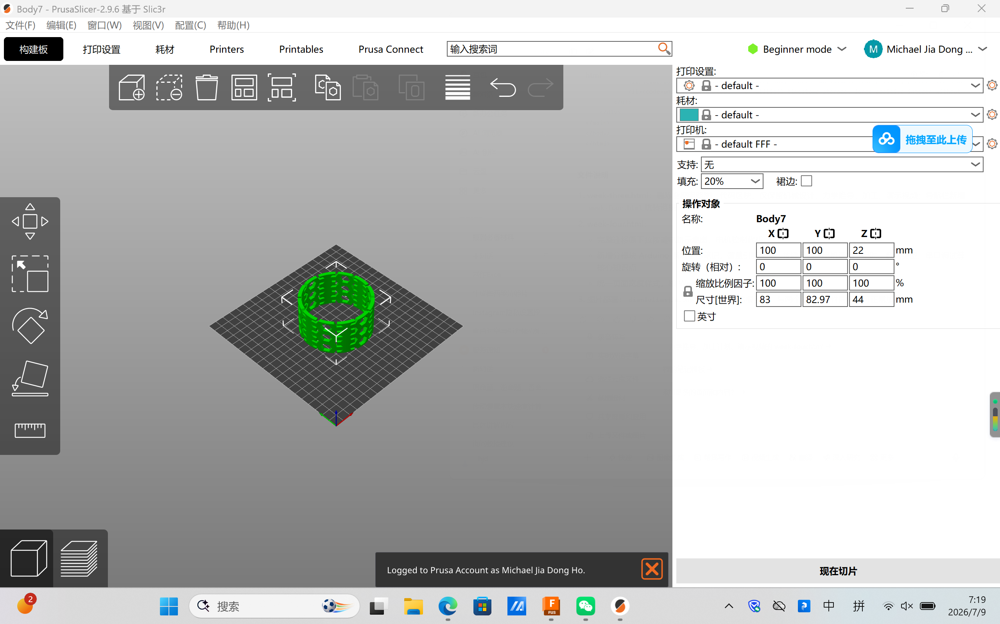

Weekly Lab Notes & Work
Task 1: Complex Perforated Cylindrical Test Structure
This hollow cylinder with repeating hexagonal cutouts is a complex geometry demonstration piece. Its continuous integrated lattice hollow structure cannot be easily manufactured via subtractive cutting or milling methods, which satisfies the assignment requirement for parts difficult to produce with removal manufacturing techniques.

Figure 1: Parametric CAD design of the hollow perforated cylinder inside Fusion 360, featuring repeating hexagonal ventilation cutouts.

Figure 2: Model placed on build plate within PrusaSlicer, 20% infill setting configured for lightweight rigid print.
Downloadable 3D Print Design Files
Three required design files for this additive manufacturing task are available for download:
Download Fusion 360 Source Archive (.f3d) Download Printable Mesh Model (.STL) Download Exported Sliced Printer G-code File